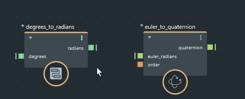
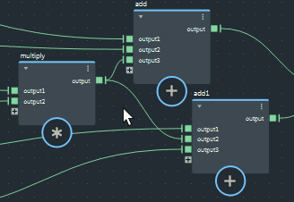
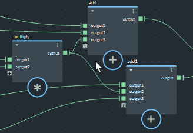

数据沿着从节点右侧的输出端口到其他节点左侧的输入端口的连接流动。您可以根据需要将同一个输出连接到任意数量的输入。
执行以下任何一种操作：
第一次单击后，如有必要，可以平移（鼠标中键或 Alt+鼠标中键）和缩放（滚轮或 Alt+鼠标右键）图表。

对于支持新端口的节点，也可以单击“新端口”(New Port)图标（灰色 +）来创建端口。
无需单击两次，您可以单击端口，拖动到另一个端口，然后松开鼠标按键。但是，不能使用此方法进行平移。

您还可以通过按 Alt+Shift 并拖动来断开多个连接。

或者，单击并拖动以选择一个或多个连接，然后按 Delete 键或 Backspace 键。